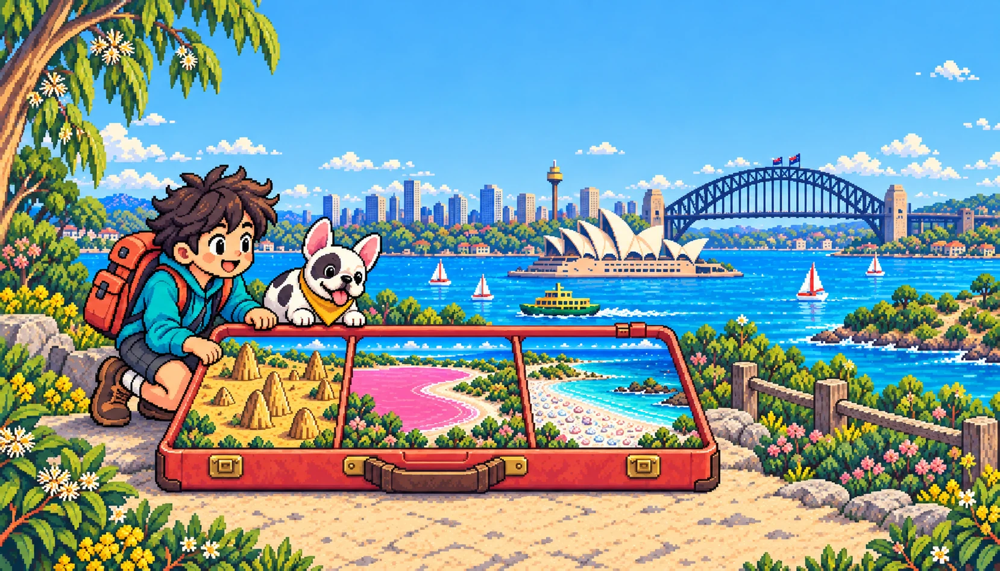

MỘT CHUYẾN ĐI CỦA BO & BON
POCKETAUSTRALIA
15 NGÀYTỪ SYDNEYVÔ VÀN ĐIỀU LẠ
SYDNEY · ĐIỂM KHỞI HÀNHCuộn để cùng đi
CHUYẾN ĐI BẮT ĐẦU
SYDNEY
ĐẾN PERTH
Tạm gấp nhịp sống quen thuộc. Phía bên kia nước Úc, những điều kỳ lạ đang đợi.
Hành trình dự kiến
SYDNEYBAY NỘI ĐỊAPERTH
CHIẾC VALI NHỎ · MỘT NƯỚC ÚC THẬT LỚN
Hẹn gặp
ngoài đời!
Những nơi này đang đợi Bo & Bon.
Chuyến đi thật sẽ bắt đầu từ đây.